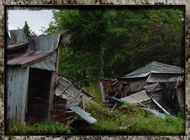
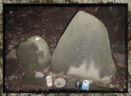
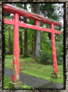
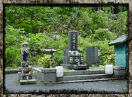

| 從地圖上消失的村莊「杉澤村」 |
|

距今五十年前，青森縣八甲田山系的裾野有個名為「杉澤」的小村子。「杉澤村」的特徵眾說紛紜，可以概述成以下幾點： ‧朝著村莊入口的道路上有寫著「從這裡進入到裡面的人，無法保證性命安全」的看板。 ‧村子的入口有個腐朽了的鳥居，那個下面有著像是骷髏頭的石頭。 ‧前進到裡面的話，會看到變成廢墟的住宅，住宅的內部大多數可以看到像是事件中血跡的痕跡。 |
|||||
| |||||
|

某天，在村中獨居的一個男人突然發狂，拿著斧頭將全村的人全殺害了，犯罪後，這個男人也跟著自殺，於是這個村落在一日間全部的人都死了，變得不存在。 「杉澤村」因為這個事件，無法再做為一個村落 ( 沒有居民 )。被打算掩蓋事件的自治團體秘密抹掉它的存在，從地圖上面被消去名字，連青森縣的正式記錄中也被除去名字。從那以後，杉澤村漸漸變成一個廢墟，五十年的歲月安靜地流逝過去。然而……無論青森縣怎麼隱藏事實；但人們的記憶卻是不能消去的。 「杉澤村」的事件一直被本地的老人以口耳相傳著，所以杉澤村的事件對本地的居民來說，可以算是公開的 ( 秘密 )。 |
|||||
| |||||
|

有一日，有三個年輕男女開著車子，在青森縣的山中迷路了，好不容易到了深山裡的某個陳舊鳥居之前。 鳥居下有二個大石頭，其中一個看上去竟有點像骷髏的樣子。 開車的年輕人這時候想起從前聽到的一個傳說～供奉著骷髏狀岩石的鳥居，是杉澤村入口…這樣的傳說。 兩個男人下車後，感覺恐懼似乎停止了，決定帶著另一個女孩，一起探險這個傳說中的「杉澤村」。 通過鳥居後，大約在杉樹林裡走了一百公尺；意外的，在三人前方出現一片空地和四間破舊的房子。三個人走進其中一間，驚訝發現裡面的牆上有大量乾涸的血跡。 男人們突然感到背部發冷，一旁的女伴也尖叫起來：啊！不太對勁，好像有人在笑的樣子。 三個人驚慌地破門飛奔而出，確實感到自己像被很多「人」包圍住一樣。三人緊急朝車子的方向跑，然而，是怎麼回事？ 無論怎麼跑，為什麼就是到不了停車處？下車後走到這裡是很容易的，廣場到車子的距離大約 100m 左右，道路也是一直線不會迷路的呀！ 儘管如此，三人依然走不出杉林，不知不覺就走散了。只有那位女孩不停地走，最到總算回到停車的地方。 她坐進駕駛座轉動鑰匙想發動車子，打算去叫人來幫忙。然而，無論怎麼轉動鑰匙，車子卻發動不了。 她急得快要哭起來，一邊不停地…不停地持續轉動鑰匙。就在那時── 「咚！咚！咚！……」 突然從車子的擋風玻璃傳來巨大的聲音，她抬頭一看，一隻隻染血的手正在用力拍打玻璃。而車子左右邊的門窗，也有無數的血手狂亂地敲打著，正想破窗而入…… 當場她因驚恐過度，不久就失去意識…… 第二天早上，當地的居民在上山途中，發現坐在被印上無數血手印的車裡，茫然失神的女孩。據說她的頭髮因為一夜的驚駭，而變成白髮。 在被送進醫院後，女孩訴說了她的恐怖經歷後不久，突然人就消失不見了，之後再也沒人見過她，甚至是她的同伴～那兩個男人。 被惡靈咀咒的村落「杉澤村」。只要走進去；保證會沒命。 |
|||||
| |||||
|

關於這個杉澤村實在是有很多的偽情報與誤解，首先是杉澤村從地圖上“消失”這句話，事實上地圖上根本沒有記載過這個村莊。 杉澤村並不是正式的名稱，原本這個地名是叫「小杉」，有人說杉澤村是從「杉さ行く」發音轉換而來，也有人說是杉林的一側有一個池塘，但不管是哪一個「杉澤村」只是通稱而不是地名。 此外，在杉澤村的大量殺人事件也不是事實。橫溝正史的「八墓村」據說好像是參考杉澤村的故事，事實上「八墓村」是參考昭和 13 年在岡山縣津山發失的「津山 30 人血案」。所以說杉澤村的傳說其實是參考「津山 30 人血案」還比較好，杉澤村被廢村雖然是真的，不過那是因為杉澤村是一個電力不通，上學還要一個半小時的僻地，因此一戶一戶漸漸遷出這裡，到了昭和 43 年連最後一戶也搬走了。總之，因為太偏僻使得村子自然消滅，這就是杉澤村的真相。因為這是一個如此不毛之地，就知道後半的怪談也是虛構了吧。 杉澤村現在是一個著名靈異地點，許多人慕名而來，但是因此而下落不明的可是一個也沒有。另外像「試膽」、「血手印」、「無數的手」、「被關在車內」等等主題都是許多怪談故事的常客，所以恐怕這也是為了強化杉澤村的傳說而加上去的。 過去杉澤村的傳說是青森縣某一個區域限定的地方傳說。事實上，在青森市這個傳說幾十年前就在傳了。近年會被年輕人注意的原因，是因為有人在網路上炒熱杉澤村的話題，後來電視、雜誌等媒體去取材過。其中富士電視台的節目「不可置信奇跡體驗！」2000 年 8 月 24 日撥放杉澤村的話題，使得杉澤村一時間成為網路檢索上的關鍵字。杉澤村雖說是因為網路而變得有名，但它成為日本有名的靈異地點是在電視節目撥放完以後的事，事實上應該要說是網路與電視的加成作用的結果。 另外一提，杉澤村傳說的真相曝光以後，故事竟然開始改變風貌，那就是「真．杉澤村傳說」。這個「真．杉澤村傳說」裡面說，我們現在去的杉澤村鳥居深處的小屋，只不過是普通的廢屋，真正的杉澤村其實是在別的地方。真．杉澤村是個發生過大量殺人的凶地，進入的人沒有一個能夠生還…。真是的，到底我們該如何看待這些說法呢？ 「牛首」的真相一公佈，馬上就有人說還有真正的「牛首」(「第 35 夜 牛の首」参照 )、說「假面死靈」根本不會出現，就說還有其他呼叫假面死靈的方法，就像是羅茲威爾事件根本沒有發現可疑的東西，就說「事實上還有第二個墜落的現場」一樣這種說法，就是在真相被揭穿以後馬上說「真的其實在別處」。 根據「青森警察史」，明治以後並沒有大規模的殺人事件。八甲田山裡被遺棄的民家與集落的數目非常的多，可能有人看到這些廢墟就隨便決定說「這裡就是真正的杉澤村！」。 結論，過去曾經有一個叫杉澤村的地方，但是，那裡沒有大量的殺人事件，幽靈大概也不會出來，要找地方辦試膽大會，應該有更多比這裡好玩的地方。 |
|||||
| |||||
|
- 日本維基百科 - livedoor - 杉沢村を調査したサイト |
|||||
|

| － 1 / 1 － | ||||


 | 祉妤 |
08:30 1/2/2012  0 0 0 0 |
| 這故事根本就是零紅蝶的藍本嘛><'' 一看到入口那巨大的紅色鳥居...已經感覺毛毛的'' |

| 永夜 |
| 19:16 7/7/20190 0 |
| 零·Zero，零·真红之蝶的背后都有着一个真实的灵异恐怖故事，细细想来莫名的 有些细思极恐啊 |